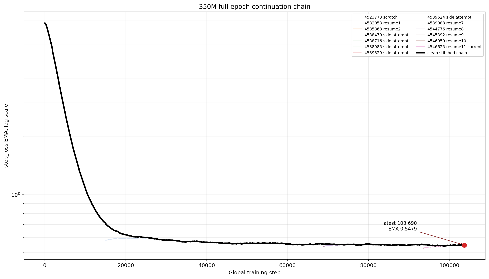

Generated 20260511_181534_UTC UTC from W&B project oxford-lob/neurips-mamba3-full-d. The black curve is the cleaned stitched chain; colored curves show individual job attempts.
all_run_loss_history.csv stitched_loss_history.csv summary.json

Same run histories and cleaned stitched chain, truncated to plotted EMA loss < 1 with global training step on a log scale.
| job_id | role | run_id | wandb_state | slurm_state | time_limit | rows | min_step | max_step | min_loss | max_loss | restore_step | resume_from_step | latest_checkpoint_step | submitted_next |
|---|---|---|---|---|---|---|---|---|---|---|---|---|---|---|
| 4523773 | primary | tzcobly9 | crashed | FAILED | 06:00:00 | 152 | 10 | 16610 | 0.555721 | 7.780694 | ||||
| 4532053 | primary | 4kybwa4a | finished | COMPLETED | 06:00:00 | 276 | 15080 | 44560 | 0.514558 | 0.661635 | 15070 | 44560 | 4535368 | |
| 4535368 | primary | bcayb0hh | finished | COMPLETED | 09:00:00 | 278 | 44570 | 68870 | 0.4899 | 0.630743 | 44560 | 68870 | 4538470 | |
| 4538470 | attempt | 87udtbe4 | crashed | FAILED | 09:00:00 | 4 | 68880 | 69160 | 0.53325 | 0.576034 | 68870 | 68870 | 4538716 | |
| 4538716 | attempt | qi3vuzfr | crashed | FAILED | 09:00:00 | 3 | 68880 | 69070 | 0.533096 | 0.561058 | 68870 | 68870 | 4538985 | |
| 4538985 | attempt | dwp0n5h2 | crashed | FAILED | 09:00:00 | 4 | 68880 | 69180 | 0.533263 | 0.58105 | 68870 | 68870 | 4539329 | |
| 4539329 | attempt | doekqiq4 | crashed | FAILED | 09:00:00 | 4 | 68880 | 69170 | 0.532691 | 0.580937 | 68870 | 68870 | 4539624 | |
| 4539624 | attempt | 1puubh2r | crashed | FAILED | 09:00:00 | 4 | 68880 | 69180 | 0.533065 | 0.580476 | 68870 | 68870 | 4539988 | |
| 4539988 | primary | 1e5wz772 | finished | COMPLETED | 09:00:00 | 278 | 68880 | 93470 | 0.494777 | 0.60179 | 68870 | 93470 | 4544776 | |
| 4544776 | primary | 6rx93808 | crashed | FAILED | 09:00:00 | 4 | 93480 | 93780 | 0.525987 | 0.564098 | 93470 | 93470 | 4545392 | |
| 4545392 | primary | 8drsgc25 | crashed | FAILED | 09:00:00 | 4 | 93480 | 93770 | 0.523482 | 0.553176 | 93470 | 93470 | 4546050 | |
| 4546050 | primary | 39c5tia4 | crashed | FAILED | 09:00:00 | 4 | 93480 | 93780 | 0.526045 | 0.56432 | 93470 | 93470 | 4546625 | |
| 4546625 | primary | ng17ypbj | running | RUNNING | 09:00:00 | 114 | 93480 | 103690 | 0.482382 | 0.667774 | 93470 |